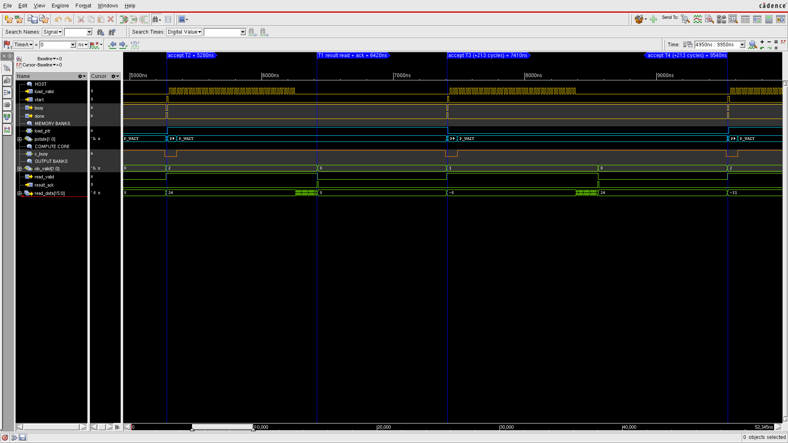

The design question
How can a fixed-point attention datapath reduce arithmetic and memory overhead while preserving bit-accurate behavior through physical implementation?
For the Chips and AI Hackathon, I designed a synthesizable signed-int8 scaled dot-product attention accelerator. The project covers arithmetic building blocks, matrix multiplication, a systolic array, QKᵀ, a lookup-table exponential, fixed-point normalization, and the probability–value (PV) datapath.
I developed the project independently, including optimization, verification, hard-memory integration, and the RTL-to-GDSII implementation in TSMC N40.

My contribution
Fixed-point arithmetic and verification
I designed the datapath and replaced 16 sequential probability divisions with four row-wise reciprocal operations, followed by multiply-and-round normalization. This reduced attention latency from 577 to 205 cycles, a 2.81× speedup, while preserving bit-accurate fixed-point behavior across 216 RTL and post-layout gate-level simulation test cases.
Memory integration and dataflow
I integrated a 16 × 64-bit dual-port hard-memory macro and redesigned the memory-to-compute dataflow with dual-bank ping-pong buffering. This eliminated a 48-cycle serial feed and reduced the steady-state task interval from 329 to 213 cycles, a 1.54× improvement.
Physical implementation
I completed the TSMC N40 RTL-to-GDSII flow and checked timing in Tempus. At 100 MHz, the reported setup and hold slack were +0.046 ns and +0.030 ns, respectively.
Inspecting the task schedule

This waveform connects the throughput claim to the control sequence: task acceptance must coordinate with memory ownership, compute activity, and result readout. The marked interval is a scheduling measure, distinct from the 205-cycle attention latency.
Results & validation
| Measure | Before | After |
|---|---|---|
| Attention latency, normalization optimization | 577 cycles | 205 cycles |
| Steady-state task interval, memory/dataflow optimization | 329 cycles | 213 cycles |
The two improvements measure different aspects of the design. The first concerns the latency of the attention calculation after arithmetic optimization. The second concerns the interval between tasks after the memory and buffering changes; the speedup factors should not be multiplied together.
Validation includes RTL simulation, post-layout gate-level simulation, and static timing analysis. The reported results describe the design and physical implementation, not measured silicon performance.
This project complements my emerging-device research with experience in digital arithmetic, verification, and the constraints of physical implementation. It also makes memory access and compute scheduling explicit parts of the design, rather than treating the arithmetic datapath in isolation.
Selected implementation evidence
The layout and annotated simulation waveform above document the physical implementation and task schedule. The reported performance is supported by simulation and timing analysis; it is not a measured-silicon result.